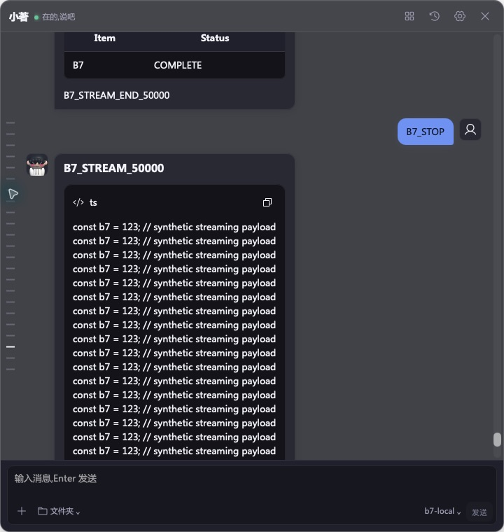
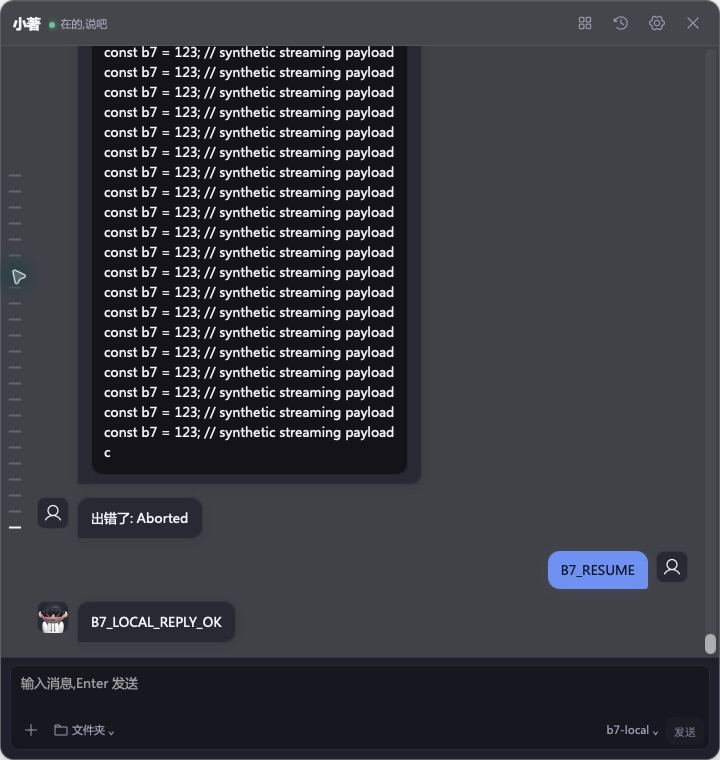

真实引擎的 message.part.delta 此前未进入聊天界面。本轮已修复并完成 1000 消息下的 10k/50k 流式、停止后继续及 PDF worker 循环验收。产品仍为 0.4.21；历史 schema 3 / 记忆 schema 4。
完整说明与边界 · 结果 / 日志 SHA · 代码指纹 · 文件清单 · 上一轮附件证据
修复前：10k 回复只有空白占位和最终正文两次 DOM 文本变化；持久化全文正确，中途却不显示。修复 3069953 接收已确认 text part 的增量，复用 33 ms 缓冲，保留最终快照替换、会话与请求边界，不展示未知或 reasoning part。
旧实现没有实际流式展示，因此旧输入耗时不构成有效的流式性能对照。本页的前后证据用于说明增量显示恢复，不宣称性能提升百分比。
| 观察 | 10k 字符 | 50k 字符 |
|---|---|---|
| DOM 文本变化 | 232 次 | 212 次 |
| 输入 / 滚动 p95 | 23 / 33 ms | 28 / 38 ms |
| 流式期间保留采样 | 30 / 30 | 30 / 30 |
| 旧消息节点 / 输入焦点 | 1000 保持 / 保持 | 1000 保持 / 保持 |
| 全文与代码块 | native 与 provider SHA 一致，DOM 代码逐字一致 | native 与 provider SHA 一致，DOM 代码逐字一致 |
真实 WebKit + OpenCode + localhost 合成 provider；每轮 500 块、计划间隔 20 ms。检查器关闭，5 次预热后采样 30 对，间隔 200 ms。全部旧行仍挂载；不是物理输入延迟、生产包或 Windows/GPU/能耗证据。10k 原始样本 · 50k 原始样本 · 全文校验
Stop 中断上游 162/500 块，native 保留 16,100 字符；下一请求收到 B7_LOCAL_REPLY_OK。现有临时「出错了: Aborted」提示仍保留，不写入额外 native 消息。
PDF 正常、损坏、超预算与取消交替 32 次，各 8 次。正常与截断文本哈希分别稳定，损坏/取消均返回预期错误，每次结束 worker 活动数为 0。QA 入口共享生产附件模块与相同 CSP；不是完整 picker/发送循环。WebKit 不提供 performance.memory，不声称 heap/RSS 收敛。PDF 完整结果


类型检查、完整前端回归、生产构建和 QA App 构建通过。React Doctor 2 条既有模式提示经审阅保留。首次沙箱 localhost 夹具失败及复跑日志、首次 UI 工具长停顿均有记录；工具停顿不是启动指标。
5 个 SQLite 完整性均 ok；专属进程、凭据、数据根和端口已清理。标准构建已恢复三个 HTML 入口，测试入口不存在。代码与证据保存在本地，未推送或发布。
优先补 Mac GUI 审批、SSE 断流/故障恢复与日志五工具/到期链路。Windows、PDF 内存、完整存储删除/多窗口、2D/3D、隐藏/睡眠/DPI/高刷/GPU/能耗继续待验。